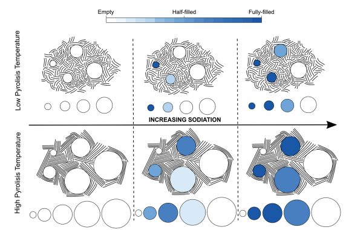
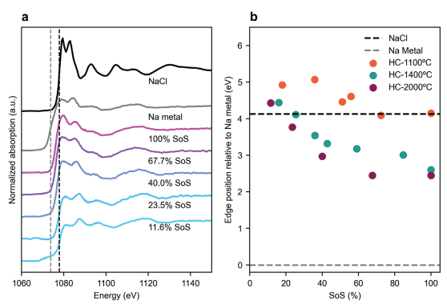
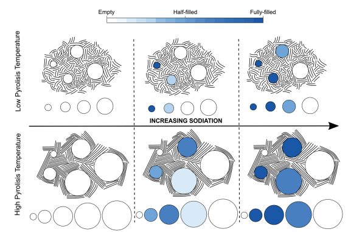
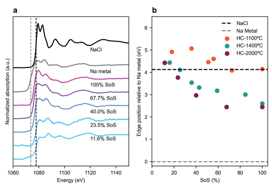
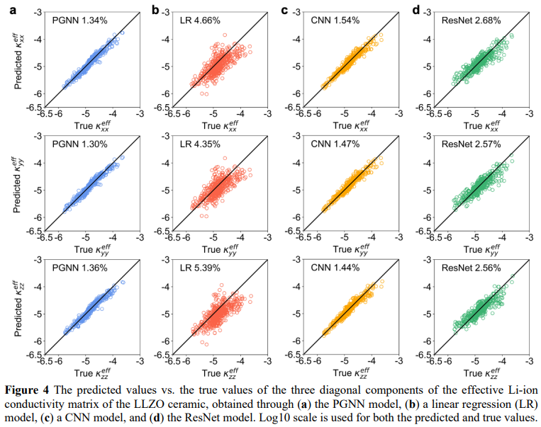
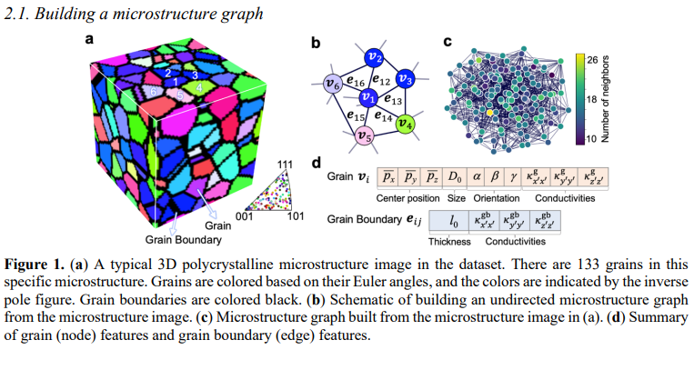
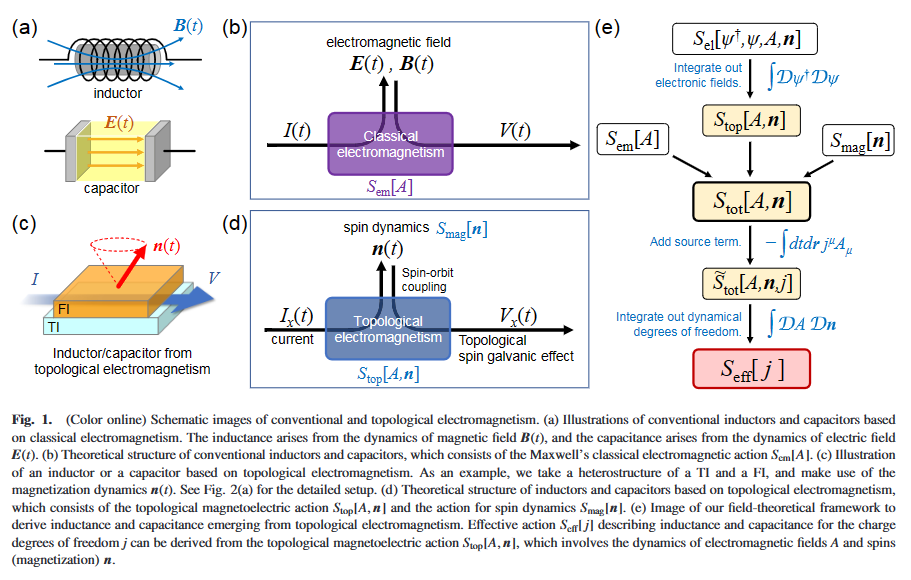
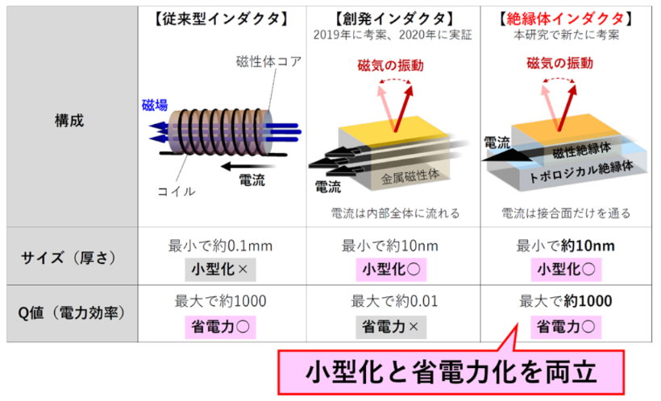

狙い
材料工学（Materials Engineering）は、物質の内部構造、プロセス、プロパティ、そしてその物質がさまざまな環境や条件下でどのように反応するかを研究する工学および科学の分野です。この学問は、新しい材料の設計、開発、そして性能評価に至るまで、幅広いトピックを網羅しています。例えば、金属、セラミック、ポリマー、複合材料、バイオマテリアルなどの各種材料、材料の構造と性質、材料の加工と製造プロセス、材料の応用と性能評価などを対象としています。
論文タイトル一覧
硬質炭素の細孔内でのナトリウム貯蔵機構の解明
硬質炭素（HC）は、ナトリウムイオン電池（NIBs）の負極として有望な材料であるが、ナトリウム貯蔵の一般的な機構は不明である。本研究では、異なる熱分解温度で作製したHCの微細構造と電気化学特性を相関させることで、細孔内でのナトリウム貯蔵機構を明らかにした。オペランドシンクロトロン小角X線散乱（SAXS）、広角X線散乱（WAXS）、X線吸収近傍構造（XANES）、ラマン分光法などを組み合わせて、細孔内でのナトリウム充填過程を詳細に調べた。HCの微細構造は、細孔サイズ分布や閉鎖細孔の体積分率、欠陥濃度やグラフェン層間距離や局所秩序などに影響することがわかった。HCの細孔内でのナトリウム貯蔵は、欠陥部位への吸着と細孔内でのクラスター形成という二段階の過程で起こり、その過程はHCの微細構造に依存することがわかった。
Published 2023-10-08
Revealing the Sodium Storage Mechanisms in Hard Carbon Pores
Luis Kitsu Iglesias, et al. (University of Colorado Boulder, USA)
https://doi.org/10.1002/aenm.202302171
Revealing the Sodium Storage Mechanisms in Hard Carbon Pores
Luis Kitsu Iglesias, et al. (University of Colorado Boulder, USA)
https://doi.org/10.1002/aenm.202302171
 



【コメント】：親戚の博士学生が第一著者の論文。ナトリウム電池の微細構造に対して放射光実験をしていて、米国内飛び回っているらしい。
【用語】硬質炭素（HC）：無秩序な炭素質材料で、ランダムに配向したグラフェン層からなる。ナトリウムイオン電池（NIBs）の負極として高い容量や安定性を示す。ナトリウムイオン電池（NIBs）：ナトリウムイオンを担体として電気エネルギーを蓄える二次電池。リチウムイオン電池（LIBs）に比べて、安価で持続可能な電池技術として期待されている。シンクロトロン小角X線散乱（SAXS）：シンクロトロン放射光源から発生するX線を試料に当てて散乱させ、その散乱パターンから試料中の微小構造や空隙などを解析する技術。
【方法】本研究では、異なる熱分解温度（1100, 1400, 2000 °C）で作製したHCを用いた。HCの微細構造を調べるために、SAXSで細孔サイズ分布や閉鎖細孔の体積分率を測定し、ラマン分光法で欠陥濃度やグラフェンの局所秩序を評価し、WAXSでグラフェン層間距離やグラフェンドメインの大きさを決定した。HCの電気化学特性を調べるために、ナトリウムイオン電池の負極としてHCを用いて充放電試験を行い、容量-電位曲線を得た。HCの細孔内でのナトリウム貯蔵機構を明らかにするために、オペランドSAXSで充電中のHCの細孔充填過程を追跡し、細孔サイズ分布と細孔内でのナトリウム充填度の関係をモデル化した。また、エクスシチュXANESで充電後のHCのナトリウム酸化状態を測定し、細孔サイズとナトリウムの金属性との相関を調べた。
【新規性】本研究は、異なる微細構造を持つHCにおける細孔内でのナトリウム貯蔵機構をオペランドSAXSとエクスシチュXANESという相補的な手法で定量的に解明した点で学術的に新規である。本研究は、HCの微細構造が細孔サイズ分布や閉鎖細孔の体積分率、欠陥濃度やグラフェン層間距離や局所秩序などに影響し、それらがさらにナトリウム貯蔵容量や電位曲線に反映されることを示した点で学術的に重要である。本研究は、HCの細孔内でのナトリウム貯蔵が欠陥部位への吸着と細孔内でのクラスター形成という二段階の過程で起こり、その過程がHCの微細構造に依存することを示した点で学術的に興味深い。
【用語】硬質炭素（HC）：無秩序な炭素質材料で、ランダムに配向したグラフェン層からなる。ナトリウムイオン電池（NIBs）の負極として高い容量や安定性を示す。ナトリウムイオン電池（NIBs）：ナトリウムイオンを担体として電気エネルギーを蓄える二次電池。リチウムイオン電池（LIBs）に比べて、安価で持続可能な電池技術として期待されている。シンクロトロン小角X線散乱（SAXS）：シンクロトロン放射光源から発生するX線を試料に当てて散乱させ、その散乱パターンから試料中の微小構造や空隙などを解析する技術。
【方法】本研究では、異なる熱分解温度（1100, 1400, 2000 °C）で作製したHCを用いた。HCの微細構造を調べるために、SAXSで細孔サイズ分布や閉鎖細孔の体積分率を測定し、ラマン分光法で欠陥濃度やグラフェンの局所秩序を評価し、WAXSでグラフェン層間距離やグラフェンドメインの大きさを決定した。HCの電気化学特性を調べるために、ナトリウムイオン電池の負極としてHCを用いて充放電試験を行い、容量-電位曲線を得た。HCの細孔内でのナトリウム貯蔵機構を明らかにするために、オペランドSAXSで充電中のHCの細孔充填過程を追跡し、細孔サイズ分布と細孔内でのナトリウム充填度の関係をモデル化した。また、エクスシチュXANESで充電後のHCのナトリウム酸化状態を測定し、細孔サイズとナトリウムの金属性との相関を調べた。
【新規性】本研究は、異なる微細構造を持つHCにおける細孔内でのナトリウム貯蔵機構をオペランドSAXSとエクスシチュXANESという相補的な手法で定量的に解明した点で学術的に新規である。本研究は、HCの微細構造が細孔サイズ分布や閉鎖細孔の体積分率、欠陥濃度やグラフェン層間距離や局所秩序などに影響し、それらがさらにナトリウム貯蔵容量や電位曲線に反映されることを示した点で学術的に重要である。本研究は、HCの細孔内でのナトリウム貯蔵が欠陥部位への吸着と細孔内でのクラスター形成という二段階の過程で起こり、その過程がHCの微細構造に依存することを示した点で学術的に興味深い。
多結晶材料の有効特性を予測するためのグラフニューラルネットワーク
・LLZOセラミックを例にとって、有限幅の粒界を持つ三次元多結晶微細構造とその有効イオン伝導率および有効弾性剛性係数を大規模に生成し、物理ベースのシミュレーションで計算した。
・原子結晶構造の特性を予測するために開発された結晶グラフ畳み込みニューラルネットワークを基に、多結晶グラフニューラルネットワーク（PGNN）モデルを開発した。PGNNモデルは、粒子と粒界の物理的特徴をノードとエッジの特徴としてグラフに表現し、メッセージ伝達関数を用いて粒子間や粒界間の相互作用を考慮する。
・最適化されたPGNNモデルは、線形回帰モデルや二つの基準となる畳み込みニューラルネットワーク（CNN）モデルよりも低い誤差（1.4%未満）で有効イオン伝導率テンソルの全ての対角成分を予測することができた。また、EBSDデータから生成された統計的に異なる微細構造に対しても良好な外挿性能を示した。
・逐次的前方選択法を用いて、粒子や粒界の個々の物理的特徴が予測精度に及ぼす相対的な重要度を定量化した。その結果、粒子や粒界の導電率が最も重要であり、粒界の厚さや粒子の中心位置は不要な特徴であることがわかった。さらに、有効イオン伝導率を予測するために事前学習されたPGNNモデルは、同じ微細構造の有効弾性剛性係数を予測する際に優れた転移学習性能を示した。
・原子結晶構造の特性を予測するために開発された結晶グラフ畳み込みニューラルネットワークを基に、多結晶グラフニューラルネットワーク（PGNN）モデルを開発した。PGNNモデルは、粒子と粒界の物理的特徴をノードとエッジの特徴としてグラフに表現し、メッセージ伝達関数を用いて粒子間や粒界間の相互作用を考慮する。
・最適化されたPGNNモデルは、線形回帰モデルや二つの基準となる畳み込みニューラルネットワーク（CNN）モデルよりも低い誤差（1.4%未満）で有効イオン伝導率テンソルの全ての対角成分を予測することができた。また、EBSDデータから生成された統計的に異なる微細構造に対しても良好な外挿性能を示した。
・逐次的前方選択法を用いて、粒子や粒界の個々の物理的特徴が予測精度に及ぼす相対的な重要度を定量化した。その結果、粒子や粒界の導電率が最も重要であり、粒界の厚さや粒子の中心位置は不要な特徴であることがわかった。さらに、有効イオン伝導率を予測するために事前学習されたPGNNモデルは、同じ微細構造の有効弾性剛性係数を予測する際に優れた転移学習性能を示した。
DATE: 8 Jun 2023 (v2)
Graph Neural Network for Predicting the Effective Properties of Polycrystalline Materials: A Comprehensive Analysis
Minyi Dai et al. (University of Wisconsin-Madison, USA)
arXiv:2209.05583 (cond-mat.mtrl-sci)
Graph Neural Network for Predicting the Effective Properties of Polycrystalline Materials: A Comprehensive Analysis
Minyi Dai et al. (University of Wisconsin-Madison, USA)
arXiv:2209.05583 (cond-mat.mtrl-sci)


コメント：複雑になるにつれて物性・材料特性を予測する説明変数は膨大に増えていく。どういった特徴量エンジニアリングが必要になっていくか。また、グラフ理論を機械学習に組み込んだ予測モデルも興味深い。
トポロジカル電磁気学によるインダクタンスとキャパシタンスの発現
・トポロジカル電磁気学：絶縁体中の電子の運動が非自明な運動量空間トポロジーを持つとき、通常のマクスウェル方程式では記述できない異常な磁気電気応答が現れる。これをトポロジカル電磁気学と呼ぶ。
・インダクタンスとキャパシタンス：電流と電圧の関係を表す複素インピーダンスには、インダクタンスとキャパシタンスという二つの要素が含まれる。インダクタンスは電流に対する遅れを、キャパシタンスは電圧に対する遅れを表す。
・トポロジカル材料と磁性材料のヘテロ構造：トポロジカル絶縁体や量子スピンホール絶縁体などのトポロジカル材料と、強磁性体や反強磁性体などの磁性材料を接合したヘテロ構造では、トポロジカル電磁気学と磁化ダイナミクスが相互作用する。
・トポロジカル電磁気学によるインダクタンスとキャパシタンスの発現：トポロジカル材料と磁性材料のヘテロ構造に交流電圧を印加すると、トポロジカル電子系が磁化ダイナミクスを駆動し、その結果としてインダクタンスやキャパシタンスが発現する。このインダクタンスやキャパシタンスは、従来の金属回路や最近提案された金属磁性体によるものと比べて、高い周波数帯域、低い消費電力、高い品質因子を実現できる。
・インダクタンスとキャパシタンス：電流と電圧の関係を表す複素インピーダンスには、インダクタンスとキャパシタンスという二つの要素が含まれる。インダクタンスは電流に対する遅れを、キャパシタンスは電圧に対する遅れを表す。
・トポロジカル材料と磁性材料のヘテロ構造：トポロジカル絶縁体や量子スピンホール絶縁体などのトポロジカル材料と、強磁性体や反強磁性体などの磁性材料を接合したヘテロ構造では、トポロジカル電磁気学と磁化ダイナミクスが相互作用する。
・トポロジカル電磁気学によるインダクタンスとキャパシタンスの発現：トポロジカル材料と磁性材料のヘテロ構造に交流電圧を印加すると、トポロジカル電子系が磁化ダイナミクスを駆動し、その結果としてインダクタンスやキャパシタンスが発現する。このインダクタンスやキャパシタンスは、従来の金属回路や最近提案された金属磁性体によるものと比べて、高い周波数帯域、低い消費電力、高い品質因子を実現できる。
DATE: 26 May 2023
Emergence of Inductance and Capacitance from Topological Electromagnetism
Yasufumi Araki et al. (Japan Atomic Energy Agency, Japan)
journals.jps.jp:doi/epdf/10.7566/JPSJ.92.074705
Emergence of Inductance and Capacitance from Topological Electromagnetism
Yasufumi Araki et al. (Japan Atomic Energy Agency, Japan)
journals.jps.jp:doi/epdf/10.7566/JPSJ.92.074705


コメント：創発インダクタよりすごい絶縁体インダクタとのこと。トポロジカル磁性体なので高品質な合成や今回はヘテロ構造の高精度な界面制御が求められると思うが、これをベースに派生技術が展開したら面白そう。
関連記事：日本原子力研究開発機構プレスリリース（16 Jun 2023）「インダクタ」のサイズを10000分の1に！超小型化できる新原理を考案
補足：この論文はトポロジカル材料と磁性材料のヘテロ構造という特殊な系を考えているが、その理論的枠組みは一般的であり、他の種類の秩序変数や物質系にも適用できる可能性があることを指摘している。例えば、超伝導体や強相関電子系などのトポロジカル材料と、多極子秩序やスカイルミオンなどの磁性材料とのヘテロ構造では、どのようなトポロジカル電磁気学が現れるか興味深い問題である。
関連記事：日本原子力研究開発機構プレスリリース（16 Jun 2023）「インダクタ」のサイズを10000分の1に！超小型化できる新原理を考案
補足：この論文はトポロジカル材料と磁性材料のヘテロ構造という特殊な系を考えているが、その理論的枠組みは一般的であり、他の種類の秩序変数や物質系にも適用できる可能性があることを指摘している。例えば、超伝導体や強相関電子系などのトポロジカル材料と、多極子秩序やスカイルミオンなどの磁性材料とのヘテロ構造では、どのようなトポロジカル電磁気学が現れるか興味深い問題である。